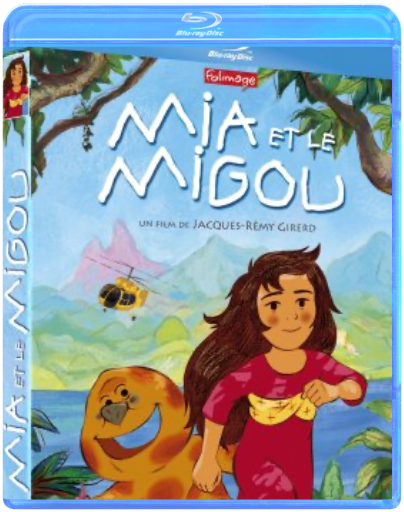
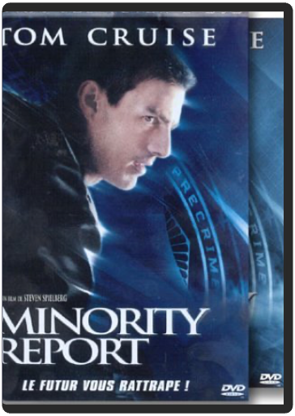

mia et le migoujacques-rémy girerd  Alertée par un pressentiment, Mia décide de quitter son village natal d'Amérique du Sud pour partir à la recherche de son père. Ce dernier travaille sur un chantier gigantesque visant à transformer une forêt tropicale en luxueuse résidence hôtelière. Pour retrouver son papa, Mia doit franchir une lointaine montagne, entourée d'une forêt énigmatique et peuplée d'êtres mystérieux. Une expérience extraordinaire'  mickey et le haricot magiquewalt disney mickey et le haricot magiquewalt disney Retrouvez des courts m?©trages irrempla?ßables, des fables et contes qui ont marqu?© des g?©n?©rations enti?®res'ĶContient¬?: - Mickey et le haricot magique (Mickey and the Beanstalk - 1947) - 4 autres courts m?©trages minority report - édition collectorsteven spielberg Un film de Steven Spielberg est toujours un événement en soi. Mais lorsque le réalisateur s'associe à Tom Cruise, cela donne un film de science-fiction comme on en voit rarement. Une véritable perle. En 2054, le meurtre a disparu grâce à la mise en place d'un système de prévention/détection/répression. La Précrime, une agence menée par John Anderton, est aidée de trois extra-lucides pour combattre le crime. Mais ceux-ci dévoilent qu'Anderton va commettre un meurtre. Celui-ci doit alors se battre contre ses propres hommes pour sauver sa peau. Dans Minority Report, Steven Spielberg crée un futur sombre et étouffant, inspiré de Philip K. Dick, et a le génie d'y inclure un univers visuel incroyable. Il n'y pas une minute du film sans une trouvaille technologique surprenante. Tom Cruise est parfait dans cette course contre la montre qui allie l'humour (noir) au drame, l'action à la tension. Rares sont les films de science-fiction qui traitent le genre avec autant de respect. Minority Report en fait partie. Un futur classique du cinéma à posséder de toute urgence. —Marc Maesen |


 Made with Delicious Library
Made with Delicious LibraryNancy, State zipflap congrotus delicious library Thomas, Julien